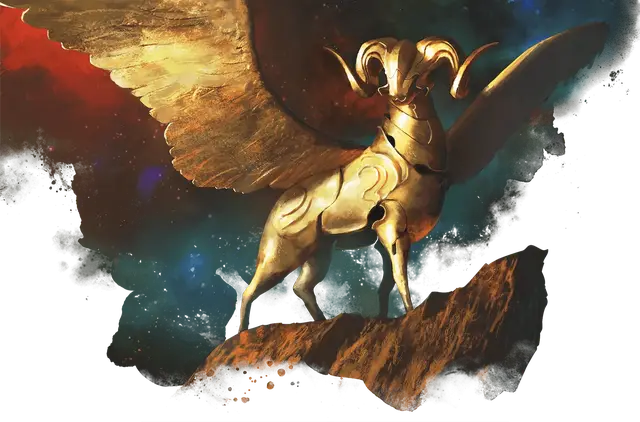

Выкованный из золота страж
Gold-Forged Sentinel
Большой Конструкт, без мировоззрения

Класс Доспеха 16 (природный доспех)
Хиты 76 (8к10 + 32)
Скорость 40 футов, летая 60 футов
| мод | спас | ||
|---|---|---|---|
| СИЛ | 18 | +4 | +4 |
| ЛОВ | 13 | +1 | +1 |
| ТЕЛ | 19 | +4 | +4 |
| мод | спас | ||
|---|---|---|---|
| ИНТ | 3 | −4 | −4 |
| МДР | 16 | +3 | +3 |
| ХАР | 10 | +0 | +0 |
Навыки Восприятие +6
Иммунитет к урону огонь, яд
Иммунитет к состояниям истощение, окаменение, отравление, очарование, паралич
Чувства тёмное зрение 120 футов, пассивное Восприятие 16
Языки понимает один язык своего создателя, но не говорит
Опасность 5 (1800 опыта)
Бонус мастерства +3
Особенности
Атака в броске. Если страж переместится как минимум на 20 футов по прямой к цели, а затем в том же ходу попадет по ней атакой тараном, цель дополнительно получает от атаки 10 (3к6) дробящего урона. Если цель — существо, она должна преуспеть в спасброске Силы Сл 15, иначе будет сбита с ног.
Отражение заклинаний. Страж совершает с преимуществом спасброски против любого заклинания, которое нацелено только на стража (а не на область). Если спасбросок стража успешен и заклинание имеет 4-й уровень или ниже, заклинание не оказывает никакого эффекта на стража и вместо этого нацеливается на заклинателя.
Действия
Мультиатака. Страж совершает две атаки Тараном.
Таран. . Рукопашная атака оружием: +7 к попаданию, досягаемость 5 футов, одна цель. Попадание: 13 (2к8 + 4) дробящего урона.
Огненное дыхание (Перезарядка 5-6). Страж выдыхает огонь 15-футовым конусом. Каждое существо в этой области должно совершить спасбросок Ловкости Сл 15, получая 27 (6к8) урона огнём при провале или половину этого урона успехе.
Описание
Первоначальное назначение выкованных из золота стражей остается загадкой, и из всех первоначальных кованых наковальни Пирфора этих конструктов труднее всего контролировать. Страж часто действует самостоятельно, находя высокие места мира смертных или ожидая, неподвижно, словно статуя, того, что может занять десятилетия, прежде чем оживает, чтобы выполнить свою таинственную цель.
Кованые
Первые кованые были созданы богом кузницы Пирфором. Он передал секрет вдыхания жизни в этих металлических существ своим самым преданным последователям, чтобы они могли подражать его работам и изобретать новые формы в своих собственных кузницах.
Некоторые кованые являются бдительными стражами святых мест, другие служат фамильярами и посланниками, а некоторые были созданы, чтобы подражать красоте, свойственной животным мира смертных. Каждый проявляет особенности, соответствующие его роли, а некоторые ведут себя как дружелюбные существа или стоические стражи.
Несколько чрезвычайно редких и ценных кованых были изготовлены рукой самого Пирфора. Некоторые из этих великолепных творений теперь являются семейными реликвиями монархов; другие затеряны в песках времени или охраняются древними монстрами.